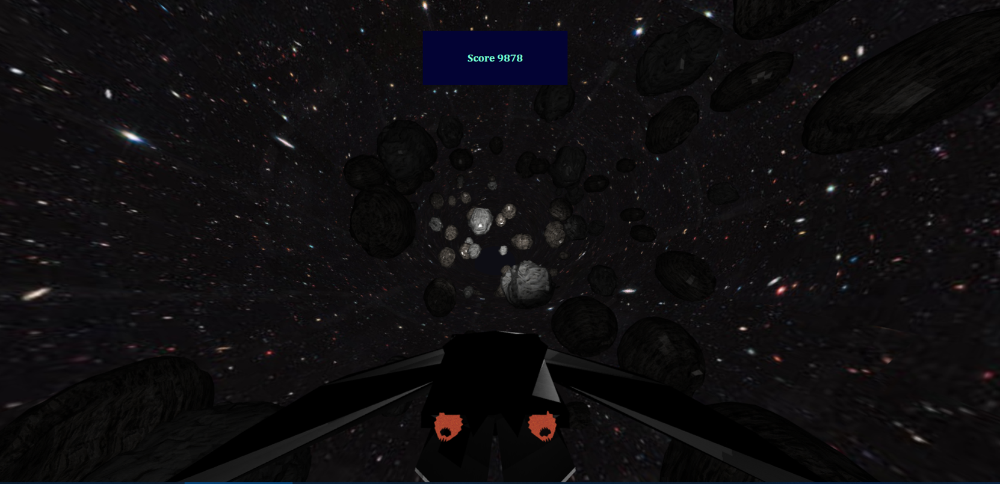
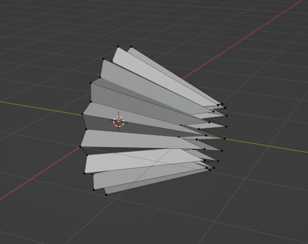
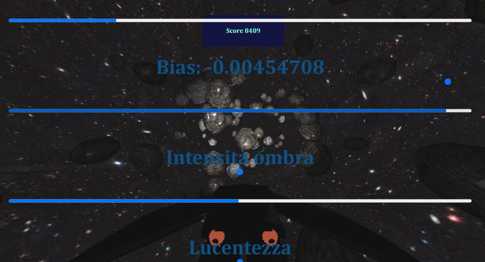

Space Dodger
Corso di studio: Fondamenti di Computer Graphics M
Studente: Simone Guidi - 981961

Introduzione
Siamo in un ottimo periodo per le esplorazioni spaziali: il nuovo telescopio James Webb ci invia foto più accurate che mai dello spazio,
si sta avviando il turismo spaziale e si pianifica di mandare il primo uomo su Marte. Anche il mondo dei videogiochi è sempre stato influenzato dallo spazio,
basti pensare come molti dei primi videogiochi avessero proprio lo spazio come ambientazione (Space Invaders, Spacewar!...). Per questi motivi ho deciso di
realizzare il mio primo videogioco ispirandomi proprio a qusto tema.
Il progetto consiste infatti in un videogioco "endless run" in cui il giocatore vestirà i panni di un astronauta in viaggio nello spazio.
In particolare il giocatore dovrà schivare i meteoriti che incontrerà lungo il viaggio e sfruttare portali acceleratori per percorrere più distanza
possibile.
Le Mesh utilizzate
-
Ambiente
Per dare l'apparenza di un viaggio spaziale ho realizzato mediante Blender una struttura di forma toroidale texturizzata con una foto
dello spazio che ho poi inserito nella scena mediante un apposito shader non influenzato dalle illuminazioni. Ho poi scalato e riposizionato
il modello in modo da contenere l'origine del sistema di riferimento al suo interno. Impostando poi una rotazione sull'asse x ho ottenuto l'effetto di
viaggio spaziale a cui ambivo.
Progetto blender dell'universo-toro
Resa webGl su browser
Sfruttando poi l'incremento del campo visivo della matrice di vista, ho notato che era possibile ottenere un effetto
simile ad un'accelerazione iperspaziale a cui molti film di fantascienza ci hanno abituato, ho così sfruttato la cosa inserendo i portali acceleratori
nel gioco.
Effetto accelerazione iperspaziale
Poiché aumentare il campo visivo comporta la deformazione degli oggetti ho optato per queste due soluzioni:
-
Quando la visuale è impostata su interna alla navicella, la deformazione dell'interno genera una brutta visualizzazione,
per ovviare al problema ho impostato che la camera si sposti automaticamente in terza persona in fase di viaggio iperspaziale;
-
Gli asteroidi inoltre subiscono una deformazione poco realistica, perciò ho impostato che all'inizio della animazione
la scala degli asteroidi diminuisse gradualmente facendoli sparire dalla vista.
-
Astronave
Mediante l'ausilio di Blender, ho realizzato anche il modello dell'astronave, texturizzata poi utilizzando un'immagine che permettesse
di simulare l'acciaio. All'interno della nave ho poi posizionato una cornice fotografica appoggiata sul "cruscotto" della nave,
contente una mia foto come richiesto da specifiche (scusi la poca originalità).
Progetto blender dell'astronave, interno
Progetto blender dell'astronave, esterno
Per dare un effetto di maggiore di realismo, ho aggiunto poi due mesh sul fondo dell'astronave a simulare
due propulsori, che ho texturizzato dandogli l'effetto della lava e poi ho messo in rotazione. Per renderizzarli
ho utilizzato lo stesso shader dell'universo in modo da dare l'impressione di essere una fonte di luce e perciò sempre visibile.

Progetto blender del propulsore
Resa webGl su browser
-
Asteroidi
Per realizzare gli asteroidi invece sono partito da delle mesh sferiche a cui ho smussato vari vertici per darle un'apparenza spigolosa,
per poi texturizzarle con delle foto raffiguranti della delle tipologie diverse di roccia.
Asteoride modello 1
Asteoride modello 2
Nel caso del secondo modello ho inoltre utilizzato la funzionalità
di sharpening per darle delle linee meno aguzze, inoltre ho applicato un normal mapping per migliorarne la resa visiva (tuttavia non sono riuscito ad implementarne
lo sfruttamento in fase di rendering).
Asteoride senza normal mapping

Asteoride con normal mapping
-
Portale acceleratore
L'ultimo elemento grafico utilizzato è un semplice nastro circolare sagomato privo di texture, renderizzato con lo shader "color"
che permette di disegnare mesh monocromatiche non influenzate dall'illuminazione. Tale elemento viene renderizzato in una posizione casuale
ogni 10 secondi e se attraversato permette al giocatore di viaggiare in modalità iperspazio, incrementando inoltre il punteggio più velocemente.
Illuminazione
L'illuminzaione si avvale di due fonti luminose, la prima, partendo dall'esempio sphere_shadows_spot_light, genera un cono di luce che permette di avvistare
gli asteroidi in avvicinamento; la seconda una luce interna alla nave che permette di visualizzarne le texture presenti dentro di essa. Per affinare la resa grafica ho
inserito nella schermata delle impostazioni la possibilità di aggiornare il valore dell'angolo della proiezione della luce, il valore del bias,
l'intensità delle ombre e della lucentezza in modo da identificare i valori che permettessero di ottenere una migiore resa grafica.

Le immagini sopra mostrano il menù delle impostazioni citato nel paragrafo precedente, mostrando con alcuni esempi sulle variazioni attuabili sulla
resa degli asteroidi illuminati.
Visuale interna all'astronave con illuminazione
Gestione meteoriti
I meteoriti vengono generati mediante l'ausilio di un array che ne definisce la posizione, la scala delle dimensioni, la tipologia e la rotazione a cui sono
soggetti, tutti questi valori vengono generati randomicamente dalla funzione AddAsteroid(). L'array viene poi iterato nella funzione drawSceneI() che chiamando la funzione
drawTravellingAsteroid() andrà a disegnare l'asteroide con le specifiche scelte. Le posizioni degli asteroidi nella lista, per quanto riguarda
l'asse z, viene poi decrementato in modo da simularne il movimento verso l'astronave. Raggiunta la posizione della nave (z = 0), viene controllato un eventuale
collisione che determinerebbe la fine della partita. Una volta superata la sogli della nave l'asteroide viene rimosso con uno shift dell'array in modo da non occupare memoria inutilmente.
Interfaccia di controllo e complessità
L'interfaccia prevede la possibilità di muovere l'astronave lungo l'asse delle x con i tasti A e D della tastiera, e lungo l'asse y con i tasti W ed S.
Mediante il tasto I è possibile aprire il pannello delle impostazioni, mentre con V si può cambiare la visuale da esterno ad interno nave. Ogni movimento o
impostazione selezionata, genera mediante variazioni graduali animazioni che permettono di ottenere movimenti di camera fluidi e/o rotazioni delle mesh.
In alto è infine presente una textview che permette di visualizzare il punteggio ottenuto.
È possibile inoltre giocare tramite il mouse, tenendo premuto il tasto sinstro del mouse l'astronave seguirà il mouse nei suoi movimenti.
Per rendere il gioco meno banale, ho impostato la funzione increaseDifficulty() che permette di rendere il gioco via via più complicato:
la velocità degli asteroidi infatti aumenterà progressivamente e contemporaneamente il loro numero diventerà maggiore. Raggiunto un limite di soglia al numero
di asteroidi (180 circa), la scala massima di quest'ultimi inizierà ad aumentare rendendo il gioco sempre più difficile.
Versione mobile
La versione mobile è utilizabile sia in landscape che in modalità portrait, e presenta all'utente quattro tasti direzionali e un bottone per accedere alle
impostazioni. Si può inotre cambiare visuale effettuando un doppio tap sulla textview che mostra il punteggio del giocatore. Per testarne la resa ho utilizzato
il mio telefono collegandomi al live server sulla rete locale in modo da rifinire i parametri di illuminzaione in modo da ottenere una resa il più
simile possibile alla versione PC.
Landscape
Portrait
Abilitando inoltre il meta tag html mobile-web-app-capable è possibile installare il programma come webapp su dispositivi mobili per semplificarne l'esecuzione
e rimuovere la search bar del browser.